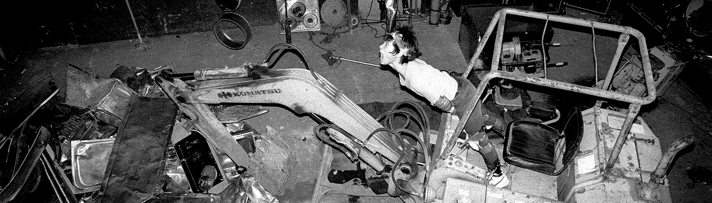

"The Most Dangerous Band in the World!"
The outfit was formed in Osaka, Japan in 1983 after Eye and Tabata met as stage hands at an Einstürzende Neubauten show. After the release of the first album, the "I" was dropped and the name became "Hanatarash". They use a variety of unusual noise-making objects, including power tools, drills, and heavy machinery.
Hanatarash was notorious for their dangerous live shows. Some of the band's most infamous shows included Eye strapping a circular saw to his back and almost cutting his leg off, and destroying part of a venue with an excavator by driving it through the back wall and onto the stage.
Examples of Eye's artwork for Hanatarash

At a 1985 show in Tokyo's Superloft, the audience were required to fill out forms due to the possibility of harm caused by the show. The show was stopped due to Eye preparing to throw a lit molotov cocktail onto the stage. The performance cost ¥600,000 (approximately $9,000 US) in repairs. After several years of the intense live shows, Hanatarash was forbidden from performing at most venues, and were only allowed to return to live performances in the 1990s after Eye would agree to cease his destructive on-stage behavior.
